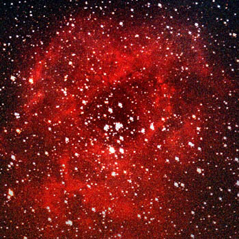

Région HII ( région d'hydrogène ionisé )
une région d'hydrogène ionisé1 ou région HII, (lire « H 2 ») est une nébuleuse en émission constituée de nuages principalement composés
d'hydrogène et dont la plupart des atomes sont ionisés, et s'étendant parfois sur plusieurs années-lumière. L'ionisation est produite par la
proximité d'une ou plusieurs étoiles très chaudes, de type spectral O ou B, qui rayonnent fortement dans l'ultraviolet extrême, ionisant ainsi le gaz alentour,
à partir duquel ces étoiles se sont à l'origine formées.Plus tard, les explosions en supernovæ et les forts vents stellaires provoqués par les étoiles les plus massives
de l'amas stellaire finiront par disperser les particules de gaz restant, laissant derrière elles un amas d'étoiles tel que celui des Pléiades.
Les régions HII tirent leur nom de la présence en grande quantité d'hydrogène ionisé, noté HII, à ne pas confondre avec l'hydrogène moléculaire (H2), et l'hydrogène neutre atomique (HI).
Ces nuages de gaz ionisé sont visibles à de très grandes distances, et l'étude des régions HII extragalactiques est fondamentale pour déterminer les distances et la composition chimique des autres galaxies.
|

|